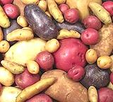

SAFARI
Users
Buying and Storing Potatoes
Select potatoes, any type, that are firm, free from blemishes and soft spots. They should not be sprouting and should not have green areas on the skin. Minor cuts from harvesting are generally not a big problem so long as they are thoroughly dry with no decay.
Store potatoes in a cool, dark place with very good air circulation. They should never be kept in a plastic bag or similar container that restricts air circulation. The ideal storage temperature is between 40°F/5°C and 50°F/10°C. Temperatures above 50°F encourage sprouting and temperatures below 40°F cause starch to turn to sugar, which changes taste and darkens color. Potatoes intended for French fries should be kept a bit warmer, around 50 degrees because any sugar conversion at all will make for bad fries.
Do not refrigerate potatoes. Refrigeration causes starches to break down into sugars resulting in overly sweet potatoes that turn an unattractive dark color when cooked. Do not store potatoes near onions - gasses onions exude accelerate decay in potatoes.
If your potatoes are starting to sprout, their texture won't be ideal, but they can still be used (depending on cooking method). The sprouts should be completely removed as they are toxic. A little greening of the skin should not be a problem but you probably want to peel those as some people are more sensitive to solanine toxins than others.
Cutting & Peeling
Before peeling or cutting potatoes, prepare a big bowl of water. Cut surfaces should be immediately plunged into this water and kept wet to avoid becoming gray and ugly. DO NOT add acid to the water unless you specifically want to harden the outside of the potato so it keeps very sharp edges in cooking (not often).
Peeling
Potatoes with tender skins should be eaten "skin on" wherever it won't interfere with enjoyment of the recipe. The skin provides dietary fiber and a fair amount of the potato's nutrition is close under the skin, particularly the protein which is concentrated right up against the skin. Of course, that's where the solanine toxins are too, so potatoes with significant greening should be peeled.
"New Potatoes" are never peeled, and sizes under 2 inches generally do not have to be peeled. Potatoes to be baked are almost always baked in their skins (russets naked, others wrapped in foil). The skin may then be eaten or not as you wish.
In many cases the skin can easily be peeled off after cooking, which method takes the least amount of material with the peel. Raw potatoes are almost always peeled with a vegetable peeler which makes it much easier to take a very thin peel than with a paring knife. I prefer a "Y" shaped peeler rather than the straight models which seem much harder to manipulate safely. The one I use takes a very thin peel. For cooked potatoes the skins are usually just pulled off.
Cutting
Do not use carbon steel knives to cut raw potatoes - they tend to cause discoloration. Whether a potato is raw or cooked, cut it with a sharp knife with a very thin blade to minimize cracking and crumbling. Thin Santokus and Nakiris with blades no thicker than 0.075 inch (2 mm) are very good. Cooked potatoes should be thoroughly cooled if possible so they are less likely to crumble.and will slice into nice shapes.
Chefs favor Yukon Gold potatoes as they cut very well after cooking, but they must be cooked very carefully because even a little over-cooked they will turn to mush.
In most cases I peel and cut into cubes before cooking even if the recipe says to peel and cut after. While there may be a little more vitamin and mineral loss, cooking is very fast, very easy to judge and very evenly cooked. The cubes stay very intact. I use mostly White Rose and Red potatoes for soups, stews, curries and stir fries, and they do tend to crack when boiled whole and crumble when sliced after boiling, the reds less so than the whites.
Cooking Methods

With potatoes now a major food and ingredient worldwide, there are a
zillion ways to cook them. For the best results you need not only know
the various tricks for each method, you must select an appropriate
variety of potato. You can refer to our Selection
Chart for help with that and the items below for a few hints
on getting methods to work right.
Deep Frying
- Use Russets for crisp fries and consistent results.
- Oil: Use a high temperature oil that is very low in polyunsaturates (which turn rancid in minutes at frying temperatures). Olive Pomace Oil and Avocado Oil are best, with Rice Bran Oil and Peanut Oil next best. See our Cooking Oils page for details and links to more information. Note: it is now known that Beef Tallow was far more healthy than the vegetable based trans fats the do-gooders forced the fast food industry to use instead.
- Do not deep fry in your nice shiny sauté pan or similar - It'll be coated with varnish and you'll never get it nice and shiny again.
- For modest amounts, an Indian kadhai is the ideal deep fryer. It requires a modest amount of oil and its shape minimizes splattering. It is better than a wok because the sides are higher and steeper.
- For larger quantities a basket deep fryer is good (but will make more of a mess).
- Electric deep fryers are a nice idea, but many underperform rather badly. Check reviews.
- Cut potatoes to desired shape. French fries should be no more than 3/8 inch on a side.
- Soak in cold water lightly acidulated with lemon juice (1/2 T per quart) or citric acid (1/8 t / quart). Let soak for 1 to 2 hours. This makes for a crisper outer surface. Rinse, drain well, spin dry in your salad spinner and set out on paper towels.
- Heat Oil to 375°F/190°C Fry in small batches until golden and cooked through. Drain in a basket lined with paper towels. Salt and serve immediately.
French Fries - Double Fried
Most people doing French fries do them as for Deep Frying above, but technically, and for the puffiest fries, a double fry is used. Note that real "French fries" (pommes frit) are round, not long sticks. The long sticks are actually Belgian, but American WWI soldiers served them thought they were still in France, and brought this mis-conception home.
- Prepare potatoes same as for Deep Fry above.
- Heat plenty of oil to 350°F/177°C. Fry the potatoes in batches to keep the oil near the right temperature. They should be fried for about 3 to 4 minutes and should not brown at all. Drain them in a strainer.
- Let the par-fried potatoes cool to room temperature before proceeding. They can be refrigerated for longer holding.
- When ready to serve heat oil to 375°F/190°C. Again fry in small batches to keep the oil near the ideal temperature but this time fry until lightly browned and crisp.
- Drain and pour into a basket lined with paper towels. Season with salt and serve immediately.
Pan Frying
- For frying grated potatoes for hash browns or pancakes, use russets, grate and then press excess moisture out of them using a potato ricer (don't force them through the ricer, just squeeze out the moisture).
- For frying cubes or slices, select an all-purpose potato that holds together well. It's a good idea to peel and cut your potatoes first then boil until barely tender. Cool before frying. This will be much quicker and less mess than trying to fry from raw.
- Grated, cubed or sliced, you will have less problem with sticking to the pan with lard than with cooking oils. Yes, lard, it's not nearly as bad for you as you've been told - but do use lard you rendered yourself. For details see our Lard page. Of course, if you are an observant Jew or Muslim, you're out of luck here, but you could try lamb fat.
Boiling
- Use potatoes appropriate for boiling - unless you are boiling them to make mashed potatoes - then use Russets or White Rose.
- In general you want to boil potatoes until just done through. Cooking beyond that causes them to become crumbly or waterlogged depending on type. Boiling time will depend on size. Use a sharp thin metal skewer to determine doneness. It should slip right through the thickest part of the largest potato without encountering a hard spot in the middle.
- Peel boiled potatoes as soon as you can handle them.
- For potatoes boiled for mashing, peel before you can handle them. Skewer on a fork and use a paring knife to help remove the skin.
- If you are cutting into slices or cubes, chill the potatoes thoroughly before cutting and use a sharp thin bladed knife - thin Santokus and Nakiris with blades no thicker than 0.075 inch (2 mm) are very good.
Steaming
An advantage of steaming over boiling is that the potatoes can be peeled before steaming without becoming waterlogged or losing as much nutrition as they would in boiling.
- Prep potatoes as desired - they may be skin-on, peeled or peeled and cut into pieces.
- Rinse cut pieces to remove free surface starch.
- Steam until a sharp skewer will go through smoothly.
- For some applications, particularly if you intend to mash potatoes cut into cubes, rinse them half way through the steaming cycle to remove the coating of sticky starch. Then finish steaming and the mash will be properly fluffy.
Baking
- Use only potatoes suitable for baking - that means Russets, or as a second choice, White Rose. Waxier potatoes do not fluff after baking.
- Pierce each potato with a thin skewer, moderately deep in just a few places to let steam escape. This is particularly important if you bake in the microwave (inferior method) where they are likely to explode if you don't.
- Rub the skins evenly with olive oil, then (optional) rub them with kosher salt (the texture is better for adhesion than regular salt, especially if you use Diamond Crystal brand).
- Never wrap baking potatoes in foil. Some people say to wrap White Rose in foil but then the flavor and texture are almost exactly the same as boiled or steamed, so why bother to heat up the oven? Also, when you try to open them like one that's been baked naked (see below) the skins break up.
- Arrange in a single layer on the top rack and bake in an oven preheated to 425°F/220°C for about an hour (for 8 ounce potatoes) or until a sharp skewer will pass through without hitting a hard spot. More time if the temperature is lower.
- The ideal temperature at the center of a baked potato is 210°F/99°C.
- Preferably serve immediately, but they can be held for as long 20 minutes if kept hot, a bit longer if you wrap them in foil after removing them from the oven, but then the skins will not be crisp.
- When ready to serve, make a lengthwise cut on the top surface, then squeeze in from the ends to pop it open.
- An oven baked potato weighing 8 ounces will lose about 20% of its weight during baking. Less if larger or wrapped in foil.
- Twice Baked: For these you bake the potato as usual, then cut off enough of the top side to scoop out the contents being careful not to break the shell. Mash the contents and mix with desired ingredients, refill and slide back into the oven until nicely browned on top.
- See also the recipe Baked Potatoes.
Roasting
- Peel or not, depending on your recipe or intent.
- Cut into halves or chunks depending on size, or for new potatoes leave whole.
- Tumble in oil or melted fat or melted butter to coat evenly. Note: line the pan with foil if using vegetable oils or it will be hard to clean. Lard makes it much easier to clean the pan.
- Arrange in a roasting pan or on a rimmed baking sheet in a single layer with a little space between potatoes.
- Bake in an oven preheated to 425°F/220°C until done. Tumble them twice during baking for even browning.
Stews & Soups
- Select an appropriate potato, peel and cut into chunks.
- Acids: Be aware that acidic cooking liquids like tomato broth or sauce, sauerkraut, wine or other acidic foods will harden the outside of pieces of raw potato. It is best in most cases to have your potatoes at least half cooked before they come in contact with acidic liquids.
- For curries and similar recipes where potatoes are simmered with a moderate amount of tomatoes and the mix is not too acid, the firming of corners and edges may be desirable for texture. I find White Rose potatoes work well under this condition.
Scalloped or au Gratin
- Cut potatoes into slices between 1/16 and 1/8 inch thick.
- If you wish to shorten baking time you can par-boil the slices, but if you do, do so only in the liquid that will be used for the sauce.
- Oil or butter the baking dish and arrange the potato slices in it so they are as even as possible.
- Make white sauce or cheese sauce, pour over the potatoes and shake the baking dish gently to distribute it.
- For au gratin sprinkle top with buttered bread crumbs.
- Bake an oven preheated to 325°F/160°C until potatoes are tender and the top is nicely browned.
- Let stand for about 10 minutes before cutting for serving.
Potato Recipes
You will find many potato recipes on this site on our Recipe Index by Ingredients.
Selecting the Right Type of Potato
There are three general categories of potato: Baking (russets), Boiling (round potatoes) and All-Purpose. Ah, if only it were that simple! Alas, within each category there are many cultivars with a wide range of characteristics - and no way for a consumer to know which cultivar they are buying.. For that reason, this chart is only a rough guide. See the Potato Page for more on varieties.
| Type => | Baking Russets |
Between White Rose |
All Purpose Kennebec Yellow Finn |
Yukon Gold Type |
Purple All Blue |
Boiling round white round red |
| French Fries | Yes | no | Yes | Yes | Yes | no |
| Potato Chips | Yes | no | Yes | Yes | Yes | Yes |
| Hash Browns | Best | |||||
| Pancakes | Best | |||||
| Pan Fry | no | ok | Yes | Yes | Yes | Best |
| Potato Salad | no (1) | Yes | Yes | Yes | Yes | Yes (6) |
| Stew & Soup | no (1) | Yes (2) | Yes | No (5) | Weird | Yes |
| Roasting | Yes | Yes | Yes | Yes | Yes | |
| Baking | Best | Yes (3) | Yes | Yes | Yes | Yes |
| Mashing | Yes | Yes | Yes | Yes | Yes | no |
| Boiling | no | ok (4) | Yes | No (5) | Yes | Best |
| Steaming | no | Yes | Yes | Yes | Yes | Yes |
| Scalloped | no | Yes | Yes | Yes | Weird | ok |
Notes
- Russets: This is the only type of potato used in Ireland. They are used in soups and stews in small quantity as a thckener, but cubes will quickly disintegrate. A writer in Cook's Illustrated chose russets for potato salad because they absorbed dressing better than others, but they take very careful handling in this use. I prefer Red Potatoes.
- White Rose: White Rose will lose their edges and corners which will thicken the stew nicely unless the stew is acidic which will harden the outside of any potato even if the core is crumbly. For curries with tomatoes White Rose is probably your best choice, hardening less than others.
- Baking: When using White Rose or similar general purpose potatoes for baking they are often wrapped in foil, while Russets should not be wrapped.
- Boiling: White Rose potatoes can be boiled, but they will be a bit more crumbly than other all purpose or boiling potatoes. They can still, after cooling, be cut into neat cubes, but if you intend to fry the cubes they will be more likely to break up than the other boiling potatoes.
- Yukon Gold: The current darling of every recipe writer, but if wet cooked just a little longer than the ideal (almost always for soups and stews) they disintegrate into mush. They are very popular with chefs, because if cooked exactly right they cut into cubes better than any other potato. I am not real fond of their flavor for many recipes.
- Red Potatoes: I find these even better than White Rose for potato salads. I don't know about Round White potatoes - we don't have those in Southern California.